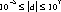

Packages This Package Prev Next Index
§1.6 Class Double
public final class java.lang.Double
extends java.lang.Number (I-§1.11)
{
// Fields
public final static double MAX_VALUE; §1.6.1
public final static double MIN_VALUE; §1.6.2
public final static double NaN; §1.6.3
public final static double NEGATIVE_INFINITY; §1.6.4
public final static double POSITIVE_INFINITY; §1.6.5
// Constructors
public Double(double value); §1.6.6
public Double(String s); §1.6.7
// Methods
public static long doubleToLongBits(double value); §1.6.8
public double doubleValue(); §1.6.9
public boolean equals(Object obj); §1.6.10
public float floatValue(); §1.6.11
public int hashCode(); §1.6.12
public int intValue(); §1.6.13
public boolean isInfinite(); §1.6.14
public static boolean isInfinite(double v); §1.6.15
public boolean isNaN(); §1.6.16
public static boolean isNaN(double v); §1.6.17
public static double longBitsToDouble(long bits); §1.6.18
public long longValue(); §1.6.19
public String toString(); §1.6.20
public static String toString(double d); §1.6.21
public static Double valueOf(String s); §1.6.22
}
This class wraps a value of the primitive type double in an object. An object of type Double
contains a single field whose type is double.
In addition, this class provides a number of methods for converting a double to a String and
a String to a double, as well as other constants and methods useful when dealing with a double.

MAX_VALUE
public final static double
MAX_VALUE = 1.79769313486231570e+308d
- The largest positive value of type double.
MIN_VALUE
public final static double
MIN_VALUE = 4.94065645841246544e-324
- The smallest positive finite value of type double.
NaN
public final static double NaN = 0.0 / 0.0
- A Not-a-Number value of type double.
NEGATIVE_INFINITY
public final static double
NEGATIVE_INFINITY = -1.0 / 0.0
- The negative infinity of type double.
POSITIVE_INFINITY
public final static double
POSITIVE_INFINITY = 1.0 / 0.0
- The positive infinity of type double.

Double
public Double(double value)
- Constructs a newly allocated Double object that represents the primitive
double argument.
- Parameters:
value
- the value to be represented by the Double
Double
public Double(String s)
throws NumberFormatException
- Constructs a newly allocated Double object that represents the floating-
point value of type double represented by the string. The string is converted to a double value as if by the valueOf method (I-§1.6.22).
- Parameters:
s
- a string to be converted to a Double
- Throws
- NumberFormatException (I-§1.41)
- If the string does not contain a parsable number.

doubleToLongBits
public static long doubleToLongBits(double value)
- The result is a representation of the floating-point argument according to
the IEEE 754 floating-point "double format" bit layout.
- Bit 63 represents the sign of the floating-point number. Bits 62-52 represent the exponent. Bits 51-0 represent the significand (sometimes called
the mantissa) of the floating-point number.
- If the argument is positive infinity, the result is 0x7ff0000000000000L.
- If the argument is negative infinity, the result is 0xfff0000000000000L.
- If the argument is NaN, the result is 0x7ff8000000000000L.
- Parameters:
value
- a double precision floating point number
- Returns:
- the bits that represent the floating point number.
doubleValue
public double doubleValue()
- Returns:
- the double value represented by this object.
- Overrides:
- doubleValue in class Number (I-§1.11.1).
equals
public boolean equals(Object obj)
- The result is true if and only if the argument is not null and is a Double
object that represents a double that has the identical bit pattern to the bit
pattern of the double represented by this object.
- Note that in most cases, for two instances of class Double, d1 and d2, the
value of d1.equals(d2) is true if and only if
d1.doubleValue() == d2.longValue()
also has the value true. However, there are two exceptions:
- Parameters:
obj
- the object to compare with
- Returns:
- true if the objects are the same; false otherwise.
- Overrides:
- equals in class Object (I-§1.12.3).
floatValue
public float floatValue()
- Returns:
- the double value represented by this object is converted to type
float and the result of the conversion is returned.
- Overrides:
- floatValue in class Number (I-§1.11.2).
hashCode
public int hashCode()
- Returns:
- a hash code value for this object.
- Overrides:
- hashCode in class Object (I-§1.12.6).
intValue
public int intValue()
- Returns:
- the double value represented by this object is converted to type int
and the result of the conversion is returned.
- Overrides:
- intValue in class Number (I-§1.11.3).
isInfinite
public boolean isInfinite()
- Returns:
- true if the value represented by this object is positive infinity (I-§1.6.5)
or negative infinity (I-§1.6.4); false otherwise.
isInfinite
public static boolean isInfinite(double v)
- Parameters:
v
- the value to be tested
- Returns:
- true if the value of the argument is positive infinity (I-§1.6.5) or negative infinity (I-§1.6.4); false otherwise.
isNaN
public boolean isNaN()
- Returns:
- true if the value represented by this object is NaN (I-§1.6.3); false otherwise.
isNaN
public static boolean isNaN(double v)
- Parameters:
v
- the value to be tested
- Returns:
- true if the value of the argument is NaN (I-§1.6.3); false otherwise.
longBitsToDouble
public static double longBitsToDouble(long bits)
- The argument is considered to be a representation of a floating-point value
according to the IEEE 754 floating-point "double precision" bit layout.
That floating-point value is returned as the result.
- If the argument is 0x7f80000000000000L, the result is positive infinity.
- If the argument is 0xff80000000000000L, the result is negative infinity.
- If the argument is any value in the range 0x7ff0000000000001L through
0x7fffffffffffffffL or in the range 0xfff0000000000001L through 0xffffffffffffffffL, the
result is NaN. All IEEE 754 NaN values are, in effect, lumped together by
the Java language into a single value.
- Parameters:
bits
- any long integer
- Returns:
- the double floating-point value with the same bit pattern.
longValue
public long longValue()
- Returns:
- the double value represented by this object is converted to type
long and the result of the conversion is returned.
- Overrides:
- longValue in class Number (I-§1.11.4).
toString
public String toString()
- The primitive double value represented by this object is converted to a
string exactly as if by the method toString of one argument (I-§1.6.21).
- Returns:
- a String representation of this object.
- Overrides:
- toString in class Object (I-§1.12.9).
toString
public static String toString(double d)
- Creates a string representation of the double argument.
- The values NaN, NEGATIVE_INFINITY, POSITIVE_INFINITY, -0.0, and +0.0
are represented by the strings "NaN", "-Infinity", "Infinity", "-0.0" and "0.0",
respectively.
- If d is in the range , then it is converted to a string in the
style [-]ddd.ddd. Otherwise, it is converted to a string in the style
[-]m.ddddE±±±±xx.
- Warning to editor: I want a plus/minus symbol before the xx in the previous line. For some reason, some printers aren't printing itit. I don't completely understand
- There is always a minimum of one digit after the decimal point. The number of digits is the minimum needed to uniquely distinguish the argument
value from adjacent values of type double.
- Parameters:
d
- the double to be converted
- Returns:
- a string representation of the argument.
valueOf
public static Double valueOf(String s)
throws NumberFormatException
- Parses a string into a Double.
- Parameters:
s
- the string to be parsed
- Returns:
- a newly constructed Double initialized to the value represented by the
string argument..
- Throws
- NumberFormatException (I-§1.41)
- If the string does not contain a parsable number.
Packages This Package Prev Next Index
Java API Document (HTML generated by dkramer on April 22, 1996)
Copyright © 1996 Sun Microsystems, Inc.
All rights reserved
Please send any comments or corrections to doug.kramer@sun.com